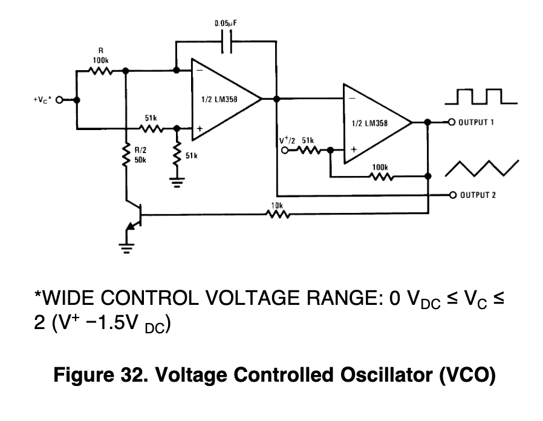

Electrical and Computer Engineer

Programming microcontrollers and embedded devices is something that I enjoy very much. I have experience with Arduino platforms, ARM Cortex architectures, Raspberry Pi's, and less beginner-friendly IC's like the PIC32. Their applications range from biomedical systems firmware to DSP to sensor fusion.
My interest in audio circuits comes from my love for the guitar. A good amount of my projects center around creating circuits to manipulate the sound of a guitar in an interesting way, whether that be with a simple fuzz pedal, or a VCO/VCF module. I try to incorporate concepts learned from Microelectronics and other circuits courses.
Being able to make my own devices from scratch with nothing but a host of IC's and passive components is very rewarding. I have created PCB's that are for both personal and professional projects using ORCAD and KiCAD. They don't teach this at school, so I am constantly working individually to improve my routing decisions and designs.
Cornell University Senior and ECE Major
I am currently a Senior at Cornell University with a major in Electrical and Computer Engineering and a minor in Computer Science. Outside of school I am a member of a project team called Cornell Nexus which is a group of students working to build an autonomous robot that will filter microplastics from beaches. My interests inside ECE include DSP, audio circuitry, and low-level programming.